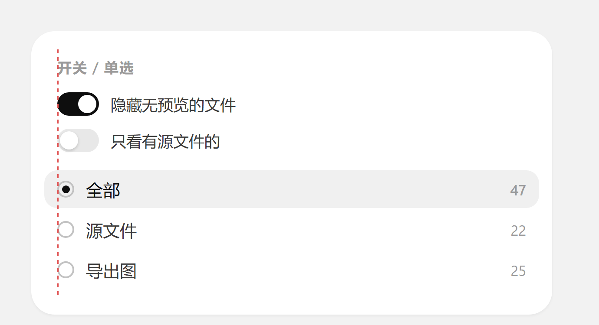
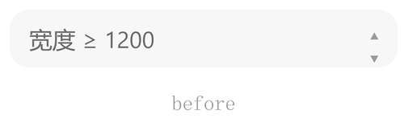
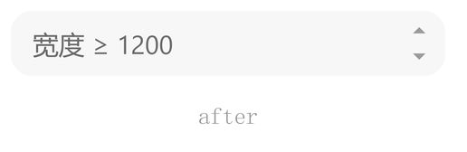

两处都是真实缺陷，不是审美偏好

根因：.side-row 有 margin: 0 -10px +
padding: 0 10px（为了 hover 背景能铺到面板边缘），
但规范页演示区里这三行被内联写成了 style="margin:0"，
把负边距抵消掉了 —— 内容因此比开关多缩进 10px。
修法：去掉内联 margin:0，让行沿用默认的负边距。
负边距往外甩 10px 仍在面板 padding 内，背景不会溢出。


根因：箭头用的是 ▴ / ▾ 两个 Unicode 字形。
它们按文字基线排布，行高 18.6px，但格子只有 11px 高 ——
place-items: center 对超出行盒的字形不起作用，字形被挤到底部。
修法：换成两个 7×4 的 SVG 三角形。SVG 没有基线概念，
place-items: center 绝对可控。实测偏移从 +4.20px 降到 0.00px。
| 测量项 | 改前 | 改后 | 方法 |
|---|---|---|---|
| 开关左边界 | x = 851.0 px | x = 851.0 px | 像素扫描首个非底色像素 |
| 单选圈左边界 | x = 861.0 px | x = 851.0 px | 同上 |
| 两者偏差 | +10.0 px | 0.0 px | — |
| 箭头墨迹中心 vs 格子中心 | +4.20 px（偏下） | 0.00 px | 10× 隔离渲染 + 像素包围盒 |
| 两箭头中心间距 | 12.0 px（设计值 12） | 12.0 px | DOM 实测 |
第一处只影响规范页。真实界面的侧栏一直是对的 ——
它的 .side-row 没有内联 margin:0，
所以圆圈和开关本来就对齐。出问题的只是规范页演示区，
那里为了塞进窄容器加了内联样式。
第二处影响所有步进控件（共 5 处：侧栏 4 个尺寸输入 + 规范页 1 个）。 它们的 CSS 是同一份，改一次全部生效。
还顺手改了树形箭头：tree-caret 里的 ▾
也是字形，同样的基线问题，一并换成 SVG。